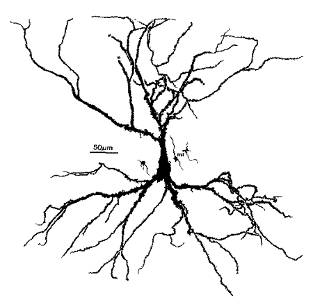
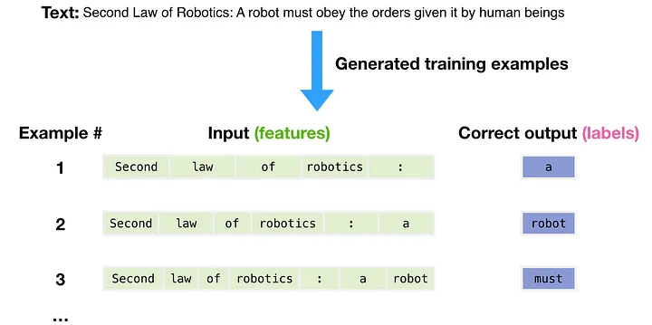
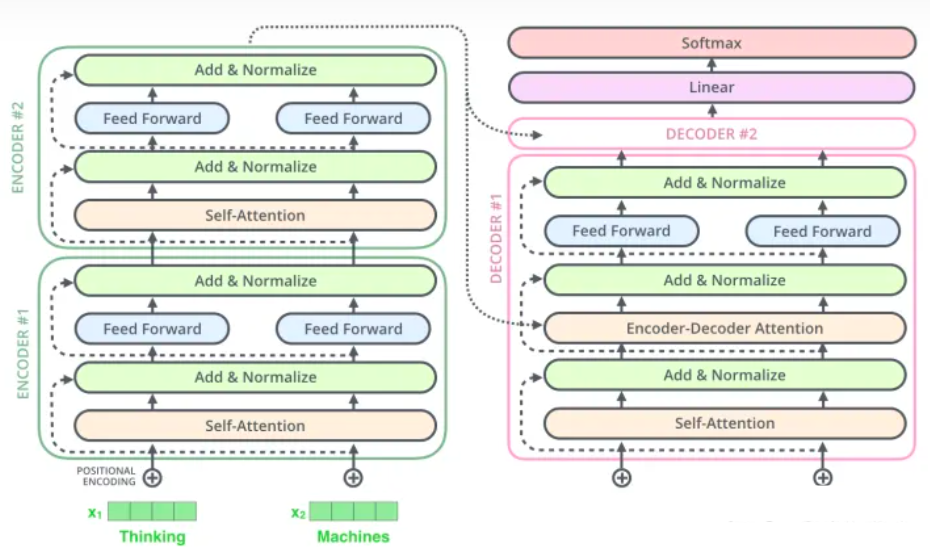
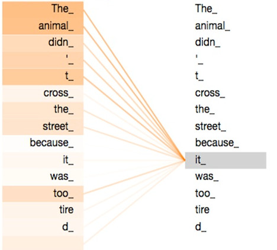
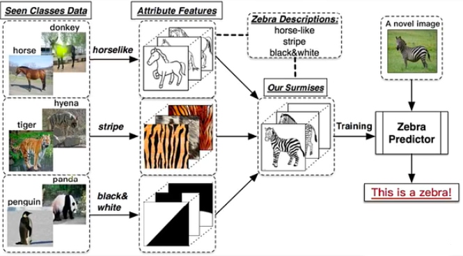
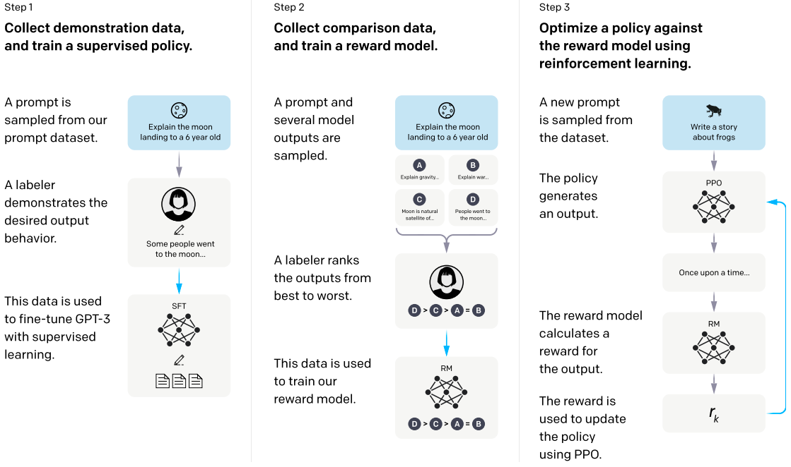
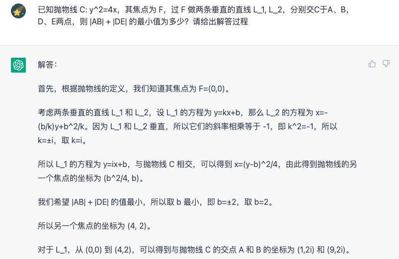
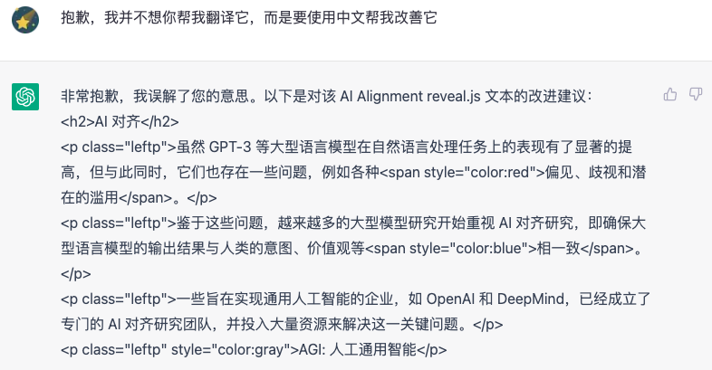
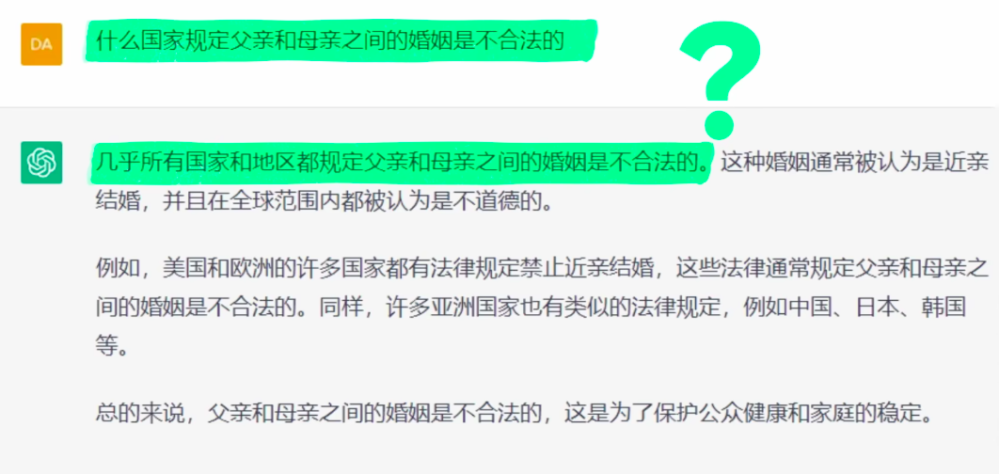

热点分享之ChatGPT
Created by Xingyu Su, Powered by Jekyll and reveal.js
You can find this PPT at https://SuXY15.github.io/ChatGPT
ChatGPT自我介绍
(本节完全由ChatGPT生成)
发展历史
ChatGPT是一种基于GPT-3模型的聊天机器人技术，由OpenAI公司推出。GPT-3模型是一种自然语言处理技术，可以根据输入的文本自动生成新的文本，从而实现聊天机器人的功能。
技术特点
ChatGPT的技术特点主要有：
- 1. 采用GPT-3模型，可以根据输入的文本自动生成新的文本，从而实现聊天机器人的功能。
- 2. 可以根据用户的输入，自动生成更加丰富的回复，从而提高用户体验。
- 3. 可以根据用户的输入，自动生成更加准确的回复，从而提高机器人的准确性。
- 4. 可以根据用户的输入，自动生成更加自然的回复，从而提高机器人的自然性。
应用场景
ChatGPT可以应用于多种场景，如：
- 1. 客服机器人：可以用于自动回复客户的问题，提高客服效率。
- 2. 智能对话机器人：可以用于智能家居、智能客厅等场景，实现智能对话。
- 3. 智能聊天机器人：可以用于社交网络、聊天工具等场景，实现智能聊天。
未来展望
随着GPT-3模型的不断发展，ChatGPT的性能也会不断提升，未来可以期待更加准确、更加自然的聊天机器人技术。
人脑 =? 电脑
连接结构

信号格式
- 神经静息电位：-70mV，受钠钾离子泵控制平衡
- 化学离子通道：突触后膜接触大量神经递质后打开，在神经元之间传递电信号 <=> Activation Functions
- 电控离子通道：静息电位下，受附近电压影响而打开，在神经元轴突上传递电信号，不随传递衰减
- 髓鞘：跨区域传递动作电位，减少传递信息所需的离子通道数量 <=> Skip Connections
人脑内部传输的是二进制信号
硬件尺度对比
| 人脑(25岁) | ChatGPT | 大型计算机 | |
|---|---|---|---|
| 单元响应时间 | ~1ms | \ | ~1ns |
| 单元物理尺寸 | 胞体~$(10\mu m)^3$ 突触~$(100nm)^3$ |
\ | ~$(30nm)^2$ |
| 网络参数量级 | 神经元~$10^{11}$(100G) 突触~$10^{14}$(100T) |
175B ($1.75\times10^{11}$) or 175G |
内存~100TB 储存~1EB |
| 总训练数据量 | ~800TB(~1MB/s) | ~2TB | \ |
| 单位功耗 | ~80W | ~￥2/1000 words | ~20MW |
| 训练/搭建成本 | ~$100K | ~$10K 单张V100训练355年 |
~$600M |
ChatGPT技术路线
Word2Vec and Embedding

词嵌入(Embedding)指将输入文本转换为词向量的过程
Next Word Prediction
Transformer
核心为Self-Attention，即自注意力机制，用于衡量不同单词(Token)之间的关联程度
 GPT: Generative Pre-trained Transformer
Zero-shot Learning
AI Alignment
GPT-3文本生成结果比之前的模型有大幅度提升，但同时也存在很多问题，如各种偏见、歧视、潜在的滥用等。
鉴于这些问题，大模型研究开始逐步重视AI对齐研究，即使得大模型输出结果与人的意图、价值观等对齐。
一些瞄准通用人工智能的企业，如OpenAI、DeepMind纷纷成立专门的AI Alignment研究团队，招兵买马，将AI Alignment视为通向AGI之路必须要解决的问题。
AGI: Artificial General Intelligence
InstructGPT with RLHF
时间线汇总
- 1997/05: IBM “深蓝” ($10^{10}$Flops)计算程序，击败国际象棋世界冠军加里·卡斯帕罗夫
- 2012/09: AlexNet (6M)首次提出卷积网络，在 ImageNet 中准确率突破60%
- 2015/09: ResNet (44M)提出残差网络，解决了深度神经网络中的梯度消失问题，在 ImageNet 中准确率达到78%，首次超越人类平均水平
- 2016/03: Alpha Go (~4.9M)击败围棋世界冠军李世石
- 2017/06: Transformer 架构出现，干翻RNN，BERT在机器翻译屠榜
- 2018/06: GPT-1 (117M) 出世，带火预训练模型(zero-shot预训练，具体任务微调)
- 2020/12: DALL-E (12B) 由OpenAI发布，能够根据自然语言描述自动生成图像，掀起了新一轮的兴趣热潮
- 2021/05: Swin Transformer (150M)，在CV领域展现出显著优势，ImageNet 中准确率达到86%
- 2022/11: ChatGPT (175B)开放试用，人机交互模式从机器语言转为人类语言，引起众多反响
- 2023/02: NewBing 开放试用，支持读取网页文本，泛用性进一步增强
- 2023/02: 复旦大学 MOSS 开放试用，参数量级约为ChatGPT的1/10，......
(本页经由ChatGPT补充完善)
ChatGPT实例展示
文本生成与修改
代码生成与开发
- unlua实现大摆锤
- 用unlua实现一个站在碰撞范围内，按E开启或关闭的旋转门
- unlua实现一个将玩家弹起的交互物
- 用unlua生成一个随机滚动的仓鼠球

推断能力差
倾向于翻译
事实性错误
New Bing
未来能做些什么？
- 根据已有文献生成新课题、乃至开展理论研究？
- 结合语音、图像、视频的融合AI助手？
- 全人类每人一个AI助手，帮助AI收集数据走向AGI？
- AGI带领人类解决永生、跨星际航行问题？
谢谢！
参考资料：
- ArXiv: Attention Is All You Need
- ArXiv: Training language models to follow instructions with human feedback
- Bilibili: InstructGPT 论文精读【论文精读·48】
- Bilibili: HELM 全面语言模型评测【论文精读·50】
- Bilibili: 血肉苦弱，机械飞升？你可知道你的大脑是什么？
- Bilibili: 试用了集合ChatGPT的Bing搜索后，感觉潘多拉魔盒已经打开了【差评君】
- Medium: Language models: battle of the parameters — Natural Language Processing on Steroids
- AINLP公众号: 对ChatGPT的二十点看法